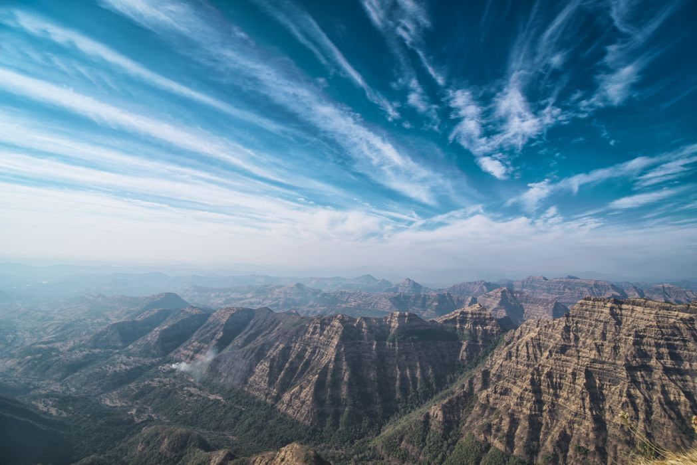
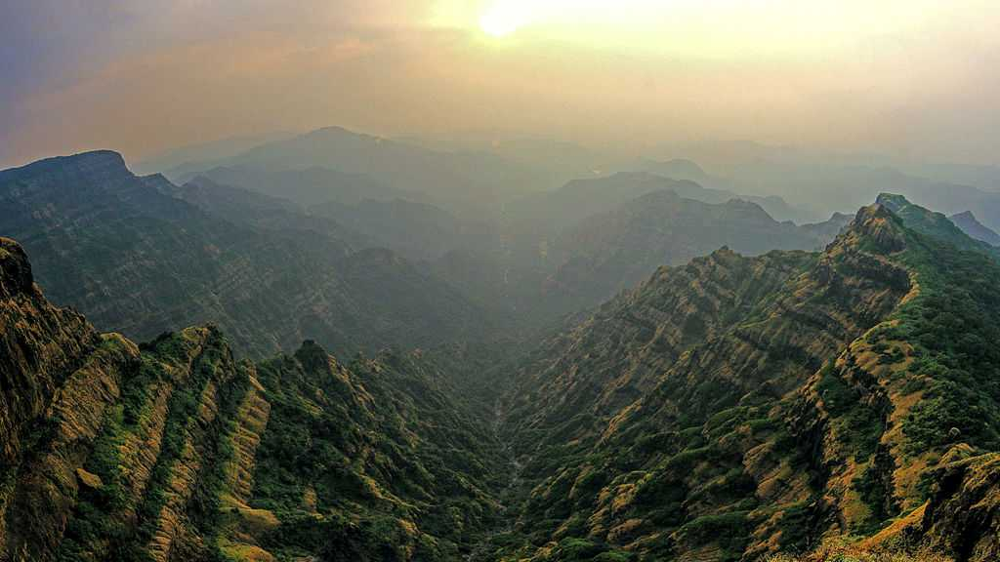
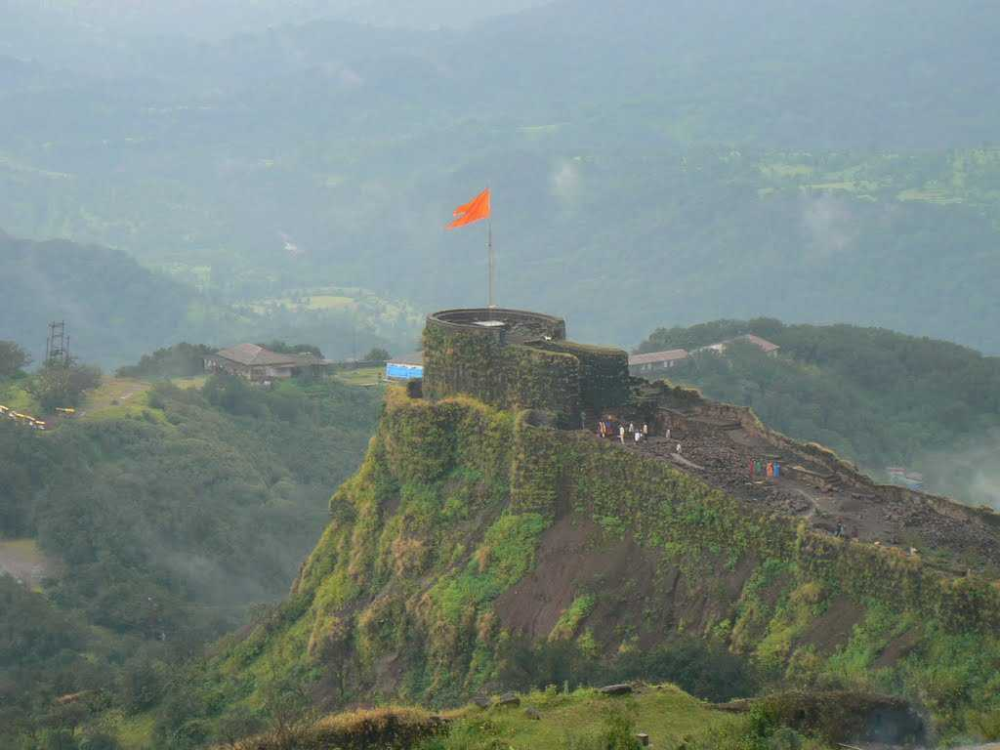

<div class="container-fluid">
    <div class="row">
        <div class="col-md-12">
            <div class="card bg-dark text-white">
                
                <div class="card-img-overlay">
                    <h5 class="card-title-main">Welcome to Mahabaleshwar!</h5>
                </div>
            </div>

            <div class="p1 mt-3">
                <p>

                    At a distance of 54 km from Satara, 123 km from Pune, 177 km from Kolhapur, 243 km from Mumbai, and
                    377 km from Panaji, Mahabaleshwar is a
                    scenic hill town in Satara district of Maharashtra. At an altitude of 1,353 m in the Western Ghats,
                    it is one of the popular hill stations in India,
                    and among the top places to visit in Maharashtra.


                    This pretty hill station is often referred to as the queen of hill stations in Maharashtra. It is
                    one of the best places to visit near Pune & Mumbai.
                    It offers a panoramic view of the plains with the imposing sloppy peaks and surrounding woods.
                    Mahabaleshwar constitutes three villages - Malcolm Peth,
                    Old Mahabaleshwar and some part of the Shindola village. Arthur's Seat, Lingmala Waterfall, and
                    Pratapgad Fort are among the must include places in your
                    Mahabaleshwar tour packages.
                    The city also witnessed the imprints of the British, who included the destination in the territory
                    of the Raja of Satara in 1819.

                </p>
            </div>
            <div class="clearfix">
                
                <p>

                    Mahabaleshwar is the source of the Krishna River that flows across Maharashtra, Karnataka, Telangana
                    and Andhra Pradesh. The legendary source of the
                    river is a spout from the mouth of a statue of a cow in Panch Ganga Temple in Old Mahabaleshwar.
                    Four other rivers also flow from here, before they merge
                    into the Krishna; these are Koyana, Venna (Veni), Savitri, and Gayatri.

                    Mahabaleshwar attracts hordes of tourists for its lovely views, beautiful landscapes and pleasant
                    temperatures.
                    There are many tourist attractions in Mahabaleshwar like forts, temples, lakes, and many more.
                    Pratapgarh Fort, Venna Lake,
                    Mahabaleshwar Temple, Krishnabai Temple, Lingamala Falls, Tapola, Panchgani are some important
                    places to visit in Mahabaleshwar.
                    Several viewpoints are strategically located to capture the panoramic views created by the majestic
                    Sahyadri Mountains and deep valleys.
                    Arthur's Seat, Wilson Point, Kate's Point, Elephant head Point, Connaught Peak, and Bombay Point are
                    popular viewpoints.
                    Mahabaleshwar is famous for the cultivation of strawberries and mulberries.

                    Mahabaleshwar has a moderate climate throughout the year and can be visited any time of the year.
                    However, the best time would be from June to October.
                </p>
            </div>
            <div class="clearfix">
                
                <p>

                    Timings: 5 AM to 9 PM.<br>

                    Distance from Satara Railway Station : 60 Kms <br>

                    How to reach:<br>

                    By Air: <br>
                    The nearest airport is at Pune (132Kms) and daily flights from other cities as well.<br><br>

                    By Rail: <br>
                    Trains arrive here from Satara, Hulbi, Kuchi and other cities.<br><br>

                    By Bus:<br>
                    State-run and private bus services are available from many cities in Maharashtra and other states.
                    Mahabaleshwar is well connected by road with Mumbai, Pune, Satara, Bangalore, Goa, and Shirdi.
                    <br>

                    By Road: <br>


                </p>
            </div>
            <div class="card mt-5">
                <h5 class="card-header">Hotels within 10kms</h5>
                <div class="card-body">
                    <div class="row">
                        <div class="col-sm-4">
                            <div class="card">
                                
                                <div class="card-body">
                                    <h5 class="card-title">C.P. Cottage (Resort)</h5>
                                    <p class="card-text">With supporting text below as a natural lead-in to additional
                                        content.</p>
                                    <a href="#" class="btn btn-primary">Book Room</a>
                                </div>
                            </div>
                        </div>
                        <div class="col-sm-4">
                            <div class="card">
                                
                                <div class="card-body">
                                    <h5 class="card-title">Treebo Trend JP Cottage,Mahabaleshwar
                                    </h5>
                                    <p class="card-text">With supporting text below as a natural lead-in to additional
                                        content.</p>
                                    <a href="#" class="btn btn-primary">Book Room</a>
                                </div>
                            </div>
                        </div>
                        <div class="col-sm-4">
                            <div class="card">
                                
                                <div class="card-body">
                                    <h5 class="card-title">Oakwood
                                    </h5>
                                    <p class="card-text">With supporting text below as a natural lead-in to additional
                                        content.</p>
                                    <a href="#" class="btn btn-primary">Book Room</a>
                                </div>
                            </div>
                        </div>
                        <div class="col-sm-4">
                            <div class="card mt-3">
                                
                                <div class="card-body">
                                    <h5 class="card-title">Treebo Trip The New Hill Retreat
                                    </h5>
                                    <p class="card-text">With supporting text below as a natural lead-in to additional
                                        content.</p>
                                    <a href="#" class="btn btn-primary">Book Room</a>
                                </div>
                            </div>
                        </div>
                    </div>
                </div>
            </div>
        </div>
    </div>
</div>